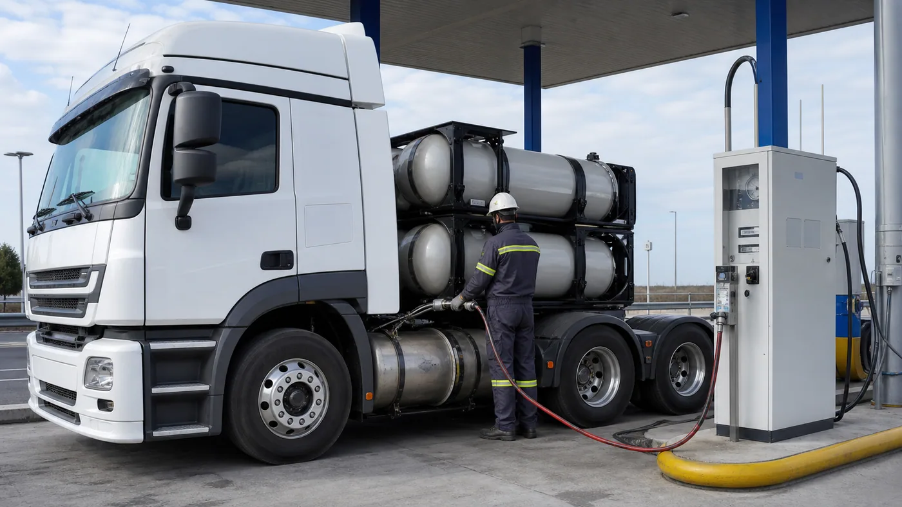

Scania volvió a ExpoTransporte 2026 después de 15 años de ausencia y utilizó la muestra de La Rural para reunir buena parte de su propuesta argentina. La exhibición incluyó camiones con motores Super, una unidad a GNC, configuraciones fuera de ruta, un bitren y la edición especial creada por los 50 años de la marca en el país.
La novedad más relevante para el trabajo cotidiano fue el motor Super de 11 litros, disponible en el P350 y también con 390 CV. La segunda señal fue el mayor espacio ganado por el gas natural, respaldado por cambios normativos e infraestructura que, según referentes de la compañía, viene creciendo en los principales corredores.
Un regreso con toda la gama
El stand reunió vehículos para tareas muy diferentes. Entre ellos se destacó el P350 con el nuevo motor de 11 litros, orientado a distribución y recorridos regionales; un R460 6x2 a GNC; el S550 Super de edición aniversario; unidades fuera de ruta y una configuración bitren.
La amplitud del conjunto muestra una estrategia que no depende de un único segmento. Distribución, agro, larga distancia, minería y energía necesitan relaciones de transmisión, cabinas, ejes y potencias diferentes. Para el usuario, esto refuerza la necesidad de identificar la configuración completa cuando solicita mantenimiento o repuestos.
Qué aporta el Super de 11 litros
Scania presentó este motor en Argentina durante Expoagro y volvió a mostrarlo en ExpoTransporte. Es una unidad de cinco cilindros disponible con 350 o 390 HP, pensada para aplicaciones sensibles al peso como cereales, leche, cargas generales, volcadores urbanos y transporte de vehículos.
El fabricante informa que comparte el 85% de sus componentes con el Super de 13 litros. Incorpora tecnologías como Cam Phaser y freno de válvulas variable. La reducción de peso permite dedicar una mayor proporción de la capacidad del vehículo a la carga o adaptar configuraciones donde un motor más grande no resulta necesario.
Scania declara hasta 8% menos consumo frente a sus motores de 9 litros y una reducción de hasta 20% en costos de mantenimiento. Son valores comparativos del fabricante: el resultado real depende de carga, ruta, relación final, conductor, velocidad y plan de servicio.
El P350 busca un espacio intermedio
La compañía explicó que el P350 Super le permite participar en aplicaciones donde tradicionalmente estaba más asociada con potencias mayores. Esto puede acercar la marca a operadores regionales o a empresas que necesitan eficiencia y capacidad, pero no un tractor de larga distancia de alta potencia.
Para comparar correctamente, no alcanza con mirar caballos. Hay que considerar torque, escalonamiento de caja, peso del conjunto, consumo en el recorrido real, capacidad de frenado auxiliar y disponibilidad del taller. Un motor más pequeño puede ser ventajoso si trabaja dentro de su rango, pero no si opera permanentemente al límite.

GNC: más capacidad y más infraestructura
El R460 6x2 expuesto representó la línea de gas para transporte pesado. En una entrevista publicada después de la muestra, Scania señaló que los cambios de pesos y dimensiones permiten compensar parte del peso adicional del sistema de GNC: determinadas configuraciones pueden sumar dos toneladas de capacidad bruta y un metro de longitud.
La infraestructura también avanzó. Otro representante de la empresa afirmó que en 2020 existían apenas uno o dos surtidores de alto caudal para camiones y que en 2026 la cifra superaba los 300. Los corredores de Vaca Muerta y NOA-Cuyo aparecen entre las zonas de mayor desarrollo.
Scania estima un ahorro de 35% a 40% en costo operativo para determinadas operaciones a GNC. Esa afirmación debe validarse en cada flota: influyen precio del combustible, kilometraje, financiación, carga útil, disponibilidad de estaciones y valor de reventa. No usar urea puede simplificar una parte del costo, pero el sistema de gas tiene sus propios componentes y requisitos.
Qué mantenimiento exige un camión a gas
- Inspección del almacenamiento: cilindros, soportes, válvulas y protecciones deben respetar los controles reglamentarios.
- Detección de pérdidas: nunca se reemplaza por una revisión visual improvisada.
- Encendido específico: bujías, bobinas y gestión del motor forman parte del mantenimiento.
- Personal capacitado: el taller necesita procedimientos, ventilación y herramientas adecuadas.
- Planificación de carga: las estaciones deben coincidir con el corredor y los descansos del conductor.
La posventa también fue protagonista
La presentación no se limitó a los vehículos. Scania llevó contratos de mantenimiento, servicios de posventa, financiación y promociones para paquetes de repuestos. Ese enfoque responde a una realidad: la disponibilidad de una unidad depende tanto de la compra inicial como del soporte durante toda su vida útil.
En camiones conectados, la telemetría permite controlar consumo, ralentí, estilos de conducción y alertas. Bien utilizada, esa información ayuda a programar paradas y detectar desvíos. No reemplaza la inspección física, pero mejora la decisión sobre cuándo intervenir.
Una transición con varias tecnologías
ExpoTransporte mostró que la evolución del transporte argentino no seguirá una sola ruta. El diésel eficiente continúa teniendo un papel central; el GNC gana espacio donde existe infraestructura; el biometano aparece como posibilidad futura y la electrificación avanza con ritmos diferentes según la aplicación.
Para una flota, la mejor tecnología será la que pueda operar de forma estable en su recorrido, con combustible, taller y repuestos disponibles. Las cifras promocionales son un punto de partida. La decisión final debe surgir de una prueba controlada y del costo total por kilómetro.